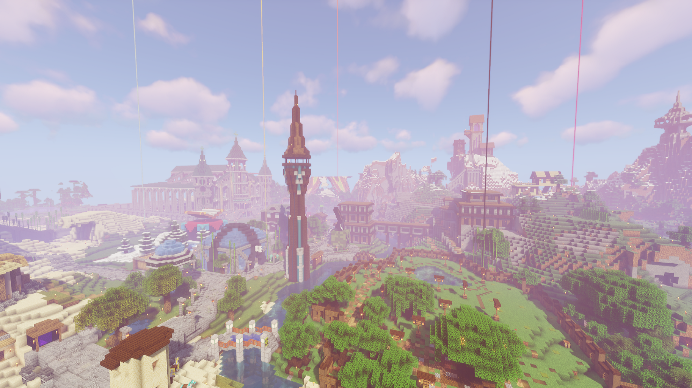

Gladecraft 1

This is the orginal Gladecraft world started by Echwo, Hypwr, LogLug, LunarIce, and nonomense on March 23, 2019. It was online for 441 days and was replaced by Gladecraft 2 on June 10, 2020.
Points of Interest:
Versions: 1.12.2, 1.14, 1.14.2, 1.14.3, 1.14.4, 1.15.2
Points of Interest:
- Shopping District
- Mense's "Castle"
- Cathedral
- S.A.N.D. Base
- Mount Tsunami
- Nether Hub
Versions: 1.12.2, 1.14, 1.14.2, 1.14.3, 1.14.4, 1.15.2
Gladecraft 1 Download
Gladecraft 1.5

This is the "Skyblock Randomized Item Timer" world. It was started on January 3, 2020 alongside Gladecraft 1. It was online for 28 days before being shutdown on January 31, 2020.
Points of Interest:
Version: 1.14.4
Points of Interest:
- Skeleton Kingdom
- Cam's House
- Josh's Base
- Merz's House
Version: 1.14.4
Gladecraft 1.5 Download
Gladecraft 2

This was the second primary Gladecraft world. It was created as a result to the Nether terrain update. The world was created on June 10, 2020 and was the official Gladecraft world for 528 days before being replaced by Gladecraft 3 on November 20, 2021.
Points of Interest:
Versions: 1.16, 1.16.2, 1.16.3, 1.16.4, 1.16.5
Points of Interest:
- Shopping Island
- Ice Pillar
- Cam's Base
- Server Museum
- Mount Tsunami
- Bret and Kyle's House
Versions: 1.16, 1.16.2, 1.16.3, 1.16.4, 1.16.5
Gladecraft 2 Download
Gladecraft 2.5

This was an amplified world to bridge the gap between the release of Caves and Cliffs Parts 1 and 2. The world started on May 18, 2021 and was the secondary world for 186 before being officially retired in preparation for the release of Gladecraft 3.
This World had Extra Plugins Including:
Versions: 1.16.5, 1.17.1
This World had Extra Plugins Including:
- Elytra+Chestplate
- Coordinate HUD
- Proximity Chat
- Concrete in Cauldron
- More...
Versions: 1.16.5, 1.17.1